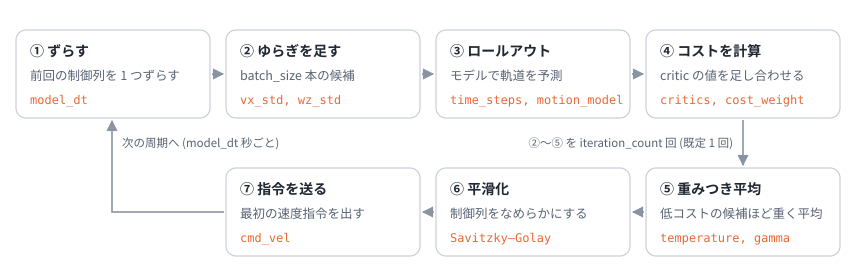

08. Nav2 の MPPI コントローラ
この章のゴール
- Nav2 の MPPI コントローラのパラメータが、05・06 章 の式のどこに当たるか説明できる
- ホライズン、サンプル数、制御周期の関係を数値で見積もれる
- critic (コストの項) の組み合わせ方と、調整の順番を知る
つながり 05・06 章の式を、実際に使われているソフトウェアの設定に結びつけます。パラメータ名と既定値は、2026 年 11 月に確認した Nav2 のドキュメントによります。版によって変わることがあるので、使う版のドキュメントを必ず確認してください。
1. Nav2 の MPPI とは
Nav2 (ROS 2 のナビゲーションスタック) の MPPI コントローラは、大域的な経路に沿って進みながら、コストマップを見て障害物を避ける 局所的な軌道計画器 です。ドキュメントでは、凸でなくても微分できなくてもよいコスト関数を使えることが、大きな利点として挙げられています。これは 05 章 7 節の「微分がいらない」強みそのものです。
運動モデルは、差動 2 輪 (DiffDrive)、全方向移動 (Omni)、アッカーマン (Ackermann) から選びます。この教材のロボットは DiffDrive に当たります。
1 周期の流れは次のとおりで、05 章の 1 周期とほぼ同じです。

05 章との違いは、⑥ の平滑化 (Savitzky–Golay フィルタ) が入ることと、⑤ の重みに補正項 (gamma) が入ることです。
2. パラメータと式の対応
| 記号 | パラメータ | 既定値 | 意味 |
|---|---|---|---|
| \(\lambda\) | temperature |
0.3 | コスト差の目盛り。0 に近いほどコストの低い候補に重みが集中し、とても大きいとただの平均に近づく |
| \(K\) | batch_size |
1000 | 1 回の更新で試す候補 (サンプル) の数。「1000 なら 50 Hz、2000 なら 30 Hz くらいで良い結果」とされている |
| \(N\) | time_steps |
56 | ホライズンのステップ数 |
| \(\Delta t\) | model_dt |
0.05 s | 1 ステップの時間。制御周期に合わせることが勧められている (例: 20 Hz なら 0.05 秒) |
| \(\Sigma\) | vx_std, vy_std, wz_std |
0.2 ずつ | 入力ごとのゆらぎの標準偏差 (\(\Sigma\) は対角行列) |
| 補正項の係数 | gamma |
0.015 | 06 章 3.1 節の \(u^\top \Sigma^{-1} \varepsilon\) の係数。「なめらかさ (大きい値) と省エネ (小さい値) のつり合い」 |
| 反復回数 | iteration_count |
1 | 1 周期の更新回数。増やすより batch_size を増やすことが勧められている |
| \(u_{\min}, u_{\max}\) | vx_max, vx_min, wz_max |
0.5, −0.35, 1.9 | 速度の上下限 (m/s, rad/s) |
| 加速度の上下限 | ax_max, ax_min, az_max |
3.0, −3.0, 3.5 | 加速度の上下限 (m/s², rad/s²) |
| \(S\) | critics |
— | 足し合わせるコストの項 (critic) の一覧 |
既定値は版によって違うことがあります (例えば wz_std を 0.4 と書いている版の資料もあります)。
3. 数字で関係をつかむ
ホライズン: \(N \Delta t = 56 \times 0.05 = 2.8\) 秒。最高速度 0.5 m/s なら、1.4 m 先まで予測します。ドキュメントでは、最高速度でホライズンの間に進む範囲が、コストマップに収まるようにすることが勧められています (収まらないと、速度が不自然に抑えられてしまうとされています)。
計算量: 1 回の更新で \(1000 \times 56 = 56{,}000\) ステップぶんのモデル計算と、それぞれの点での critic の計算をします。20 Hz なら 1 秒に 112 万ステップです。Nav2 の実装は、これを配列演算 (Humble では xtensor というライブラリ) で、全部の候補をまとめて計算しています。
制御周期と model_dt: Humble の実装では、制御周期が model_dt と等しいとき、前回の制御列を 1 つずらす処理 (01 章 4.2 節のウォームスタート) が有効になります。
ゆらぎの大きさ: vx_std = 0.2 m/s は、最高速度 0.5 m/s の 40 % です。かなり大きくゆらがせて、広く探していることが分かります。
temperature: \(\lambda = 0.3\) なら、コストが 0.3 違うと重みが \(1/e\) 倍、1 違うと \(e^{-1/0.3} = 0.036\) 倍です。これが「大きな差」かどうかは、critic の重み (コストの大きさ) で決まります (05 章 3 節)。
4. critic = コストの項
Nav2 では、コスト \(S\) を critic と呼ばれるプラグインの和で作ります。各 critic は、候補の軌道ごとに「重み × (項)\(^{\text{べき}}\)」を計算して足します (cost_weight, cost_power)。
| critic | 何を罰するか | 既定の重み | この教材のコストでは |
|---|---|---|---|
ConstraintCritic |
速度などの制約を破ること | 4.0 | 上下限 (デモでは切っている) |
CostCritic |
コストマップの値 (障害物への近さ)。衝突は非常に大きな値 | 3.81 | 人の罰。衝突の値は「接触だけ罰」の段差に近い |
ObstaclesCritic |
障害物までの距離 (CostCritic の代わりに使う) |
20.0 と 1.5 (危険と反発の 2 つ) | 人の罰 |
PathAlignCritic |
経路からのずれ | 10.0 | 目標点からのずれ |
PathFollowCritic |
経路の少し先の点へ進めていないこと | 5.0 | 目標点からのずれ |
PathAngleCritic |
経路の方向と向きのずれ | 2.2 | — |
GoalCritic |
ゴールへの距離 (近くなってから効く) | 5.0 | 終端コスト |
GoalAngleCritic |
ゴールでの向きのずれ (近くなってから効く) | 3.0 | — |
PreferForwardCritic |
後ろ向きに進むこと | 5.0 | (\(v \ge 0\) に制限) |
TwirlingCritic |
不必要に回ること (角速度の大きさ) | 10.0 | \(q_\omega \omega^2\) |
VelocityDeadbandCritic |
動き出せないほど小さい速度 | 35.0 | — |
どの critic を使うかは critics に並べて選びます。01 章 のコストが「ずれ + 回りすぎ + 人への近さ」の和だったのと同じ考え方で、項を増やしたり重みを変えたりして「良い動き」を表します。
5. 調整の考え方
5.1 ドキュメントの勧め
- まず障害物の回避、次に経路の追従、最後に経路への整列の順に調整する
- 重みのつり合いを保つ。経路への整列を重くしすぎると、動く障害物をよけるために経路から離れることができなくなる
- 経路の追従が要らない用途なら、経路の critic を外してもよい
5.2 05・06 章の知識で考える
| 症状 | 考えられる原因 | 試すこと |
|---|---|---|
| 指令がガタガタする | \(\lambda\) が小さすぎて、たまたま良かった 1 本に引きずられている。ゆらぎが大きすぎる | temperature を上げる、vx_std / wz_std を下げる、TwirlingCritic を重くする |
| 反応が鈍い、よけ始めが遅い | \(\lambda\) が大きすぎて平均に近い。ホライズンが短い | temperature を下げる、time_steps か model_dt を見直す |
| 狭い所の抜け道を見つけられない | ゆらぎが小さく、その道を通るサンプルがない | vx_std / wz_std を上げる、batch_size を増やす |
| critic の重みを変えたら性格が変わった | コストの大きさが変わり、\(\lambda\) の効き方が変わった | temperature も合わせて調整する (コストを 2 倍にしたら \(\lambda\) も 2 倍) |
| 計算が間に合わない | \(K \times N\) が大きすぎる | batch_size か time_steps を減らす、制御周期を下げる |
6. この教材のデモとの違い
| この教材のデモ | Nav2 | |
|---|---|---|
| コスト | 01 章の式 (目標点・回りすぎ・人) | critic の和 (コストマップを参照) |
| \(\lambda\) | 1 (既定) | 0.3 (既定) |
| \(K\), \(N\), \(\Delta t\) | 300, 30, 0.1 秒 | 1000, 56, 0.05 秒 |
| 補正項 | なし | gamma = 0.015 |
| 平滑化 | なし | Savitzky–Golay フィルタ |
| 加速度の制限 | なし | ax_max など |
コストの大きさが違うので、デモの \(\lambda\) と Nav2 の temperature は直接は比べられません。
理解度チェック
time_steps= 56、model_dt= 0.05 のとき、ホライズンは何秒か。vx_max= 0.5 m/s なら何 m 先まで予測するか?temperatureを 0.3 から 0.03 にすると、どうなると予想されるか? 3 にすると?- critic の重みを全部 10 倍にしたら、
temperatureはどうすれば同じふるまいになるか? iteration_countを増やすよりbatch_sizeを増やすことが勧められているのはなぜか。06 章の見方で考えてみようgammaの項は、06 章のどの式に当たるか?
答えの例
- \(56 \times 0.05 = 2.8\) 秒。\(0.5 \times 2.8 = 1.4\) m 先まで。
- 0.03: コストの低い少数の候補に重みが集中し (ESS が下がり)、指令がガタつきやすくなる。3: 重みがほぼ均等になり、更新が進みにくく、反応が鈍くなる。
temperatureも 10 倍にする。重みはコストの差を \(\lambda\) で割った値で決まるため。- 考え方の一例: 1 回の更新はぼかしたコストの坂を下る 1 歩で、その傾きの推定の正確さはサンプル数で決まる (06 章 4 節)。同じ計算量なら、不正確な傾きで何歩も進むより、正確な傾きで 1 歩進み、残りは次の周期 (ウォームスタート) に任せるほうが安定しやすい。
- 06 章 3.1 節の補正項 \(\lambda \sum_t u_t^\top \Sigma^{-1} \varepsilon_t^k\) (\(\lambda\) の代わりに
gammaを係数にしたもの)。
もっと知りたい人へ
- Nav2, "Model Predictive Path Integral Controller" (設定ガイド): https://docs.nav2.org/configuration/packages/configuring-mppic.html
- Nav2, nav2_mppi_controller の README (Jazzy, API ドキュメント内): https://api.nav2.org/nav2-jazzy/html/md_nav2_mppi_controller_README.html